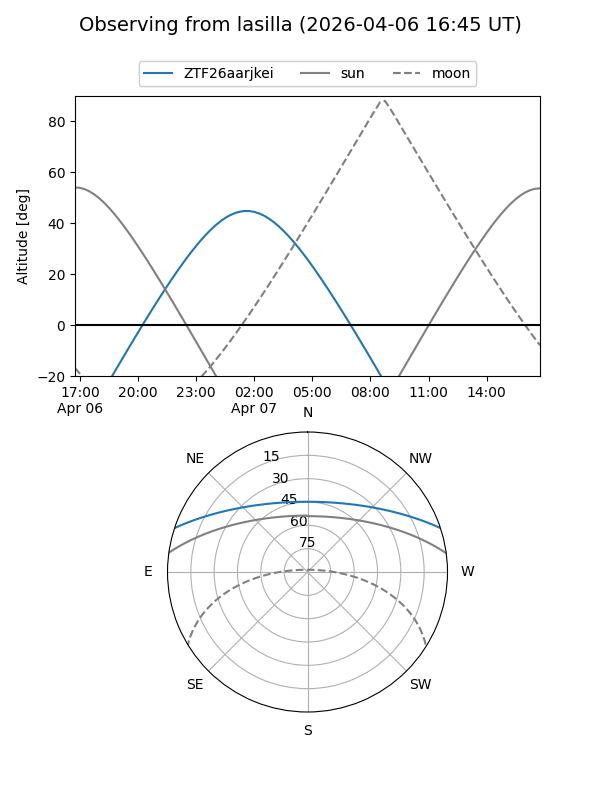
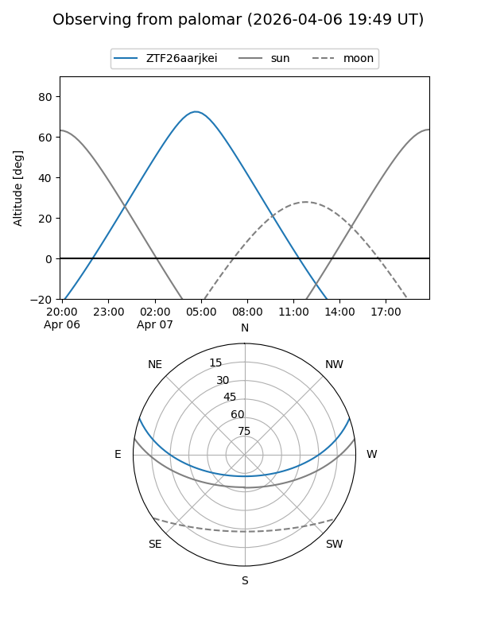

ZTF26aarjkei
Target ZTF26aarjkei at 2026-04-07 07:09
Aliases and brokers:
FINK: link
Lasair: link
ALeRCE: link
alt names
ZTF26aarjkei (ztf,fink_ztf)
Coordinates:
equatorial (ra, dec) = 148.3646,+16.03061
equatorial (HMS+DMS) = 09:53:27.50,+16:01:50.19
galactic (l, b) = (218.5988,+47.39807)
Flags:
Photometry:
last ztfg=19.89
1 ztfg detections
Lightcurve
Visibility


Additional plots